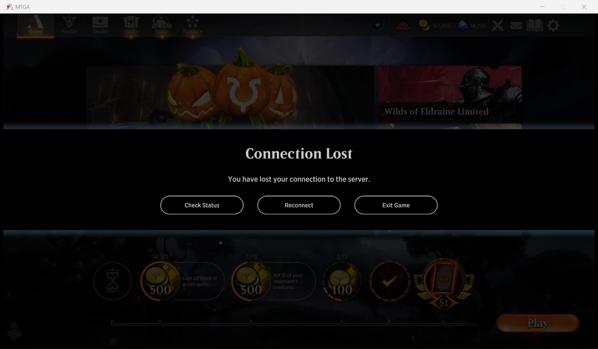

10/07 Hacking on MTGA protocols
Lately I have been playing with MTGA network protocols in spare time. For now, this ends with a Python script that gets MTGA credentials, creates a match room, responds to some game prompts (which drops a land or casts a spell in the game) and exits ungracefully. It's only partly done, but I think a post is needed to make a record.
I have been playing the game for years. It feels terrible to play in my region, because I always lose connection to the server, unobserved on most occasions. The problem became worse lately when I can't even finish a match. I remembered a Hacker News article on MTGA hacking written by Daniel Meyer, and began to look into the game assets. I'll be satisfied even if it just pops up a connection notice when going offline!
First try: using MTGA assets as a library
As what Meyer's article states, MTGA is a unity game with no extra anti-inspection stuff from tools like dnSpy. Actually I downloaded dnSpy long ago for the exactly same purpose, but simply could not find a way to read the code comfortably. This time I copied the code as Meyer suggests, and linked against some DLLs.
However, I'm clumsy and couldn't make injectors to work like Meyer had done. So I decided that if the DLL stands for
"dynamic linked library", they should be able to empower my standalone .exe to call
some in-game methods. Shouldn't they? That way, I could make the game run in whatever way I want!
Well, it turned out that Unity is not happy with that. When I use something like
PAPA papa = GameObject.FindObjectOfType<PAPA>();
, it just threw me something like
System.Security.SecurityException:“ECall methods must be packaged into a system module”
. So I guess it is not possible to initialize things without a running Unity
context.
Next: dynamic debugging
That is harsh for someone who is cracking his first program! Well, I must read the lines
of the Assembly-Csharp.dll by my own. But the amount of code is huge, and there
is no explicit entry point
in a Unity game. I'm lost.
So can I just make the game run and plug in some breakpoints? I consulted dnSpy's doc and that is possible provided that I have a patched mono dll, which relies on a Unity repo of the exactly same version as the game, and a patcher and build from scratch ...
TL;DR: I tried but gave up finally.
Run something at least!
When inspecting the code, I have noticed a class named BootStrap with a
lot of Start_Coroutine_xxx things in it, the game loader. As it is going to establish some
network connections, I try to mock the network in there. The call structure is a little
complicated, even with dnSpy's Ctrl + Shift + R analyzing tool (for example, some methods
have no "is used by" field, because their class is stored in some variable whose type is its interface
or superclass).
It first uses HTTP to knock on a "door bell" (Assets.Core.Code.Doorbell.Doorbell),
and gets a TCP address. I constructed the HTTP request using Python's requests
package. Some credentials are taken from hard-coded string and the registry, according to
Unity's documentation.
resp = requests.post(uri, data=json.dumps(doorbell_request, ensure_ascii=False, separators=(',', ':')).encode('utf-8'),
headers={"content-type": "application/json"})
# get the front door uri
fdUri = resp.json()['fdURI']
By the way, I use Python here as a proof-of-concept implementation. There may be a better language choice, but Python's grammar and packages are convenient enough for my use.
Well, it pays off! Imagine my joy when I saw it print something meaningful.
What about good old print in the source code?
The source code is still a mess though. I had no idea what they are doing. The game comes with logging utility in it, and I fortunately found a